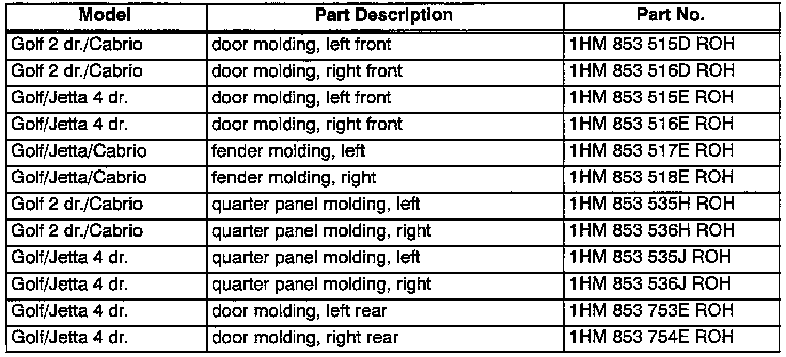

Body Side Moldings - Availability
Group: 57Number: 00-03
Date: Dec. 21, 2000
Subject:
Body Side Moldings, Painting
Model(s):
Golf, Jetta, Cabrio 1993 --> 1999
Production
There are currently over 240 part numbers for body side moldings, due to the approximately 22 different color variations on 1993-1999 Golf, Jetta, and Cabrio models produced in Mexico.
To simplify part ordering, color-coded part numbers will be superseded to the original part number, with code "ROH", as inventory of colored parts is depleted. "ROH" identifies these parts as plain, without primer applied.

All color-coded parts will be superseded to the numbers on the table as shown:
CAUTION!
Part numbers are for reference only. Always check with your Parts Dept. for the latest parts information.
Service
Plain parts may be painted using a paint system of choice. The following DuPont and Standox Systems performed well:
Application Note:
Part must be tempered for 60 minutes at 140° F to remove release agents and cleaned thoroughly afterward, prior to primer/paint application.
DuPont:
^ 2330S Adhesion Promoter
^ 2340S Flex Adhesion Sealer
^ appropriate color base coat (activated ChromaBase)
^ 72400S Clearcoat
Standox:
^ Standoflex 1K Plastic Primer
^ Standoflex 1K Plastic Filler
^ appropriate color (unactivated MSB base coat)
^ 2.1 Clear